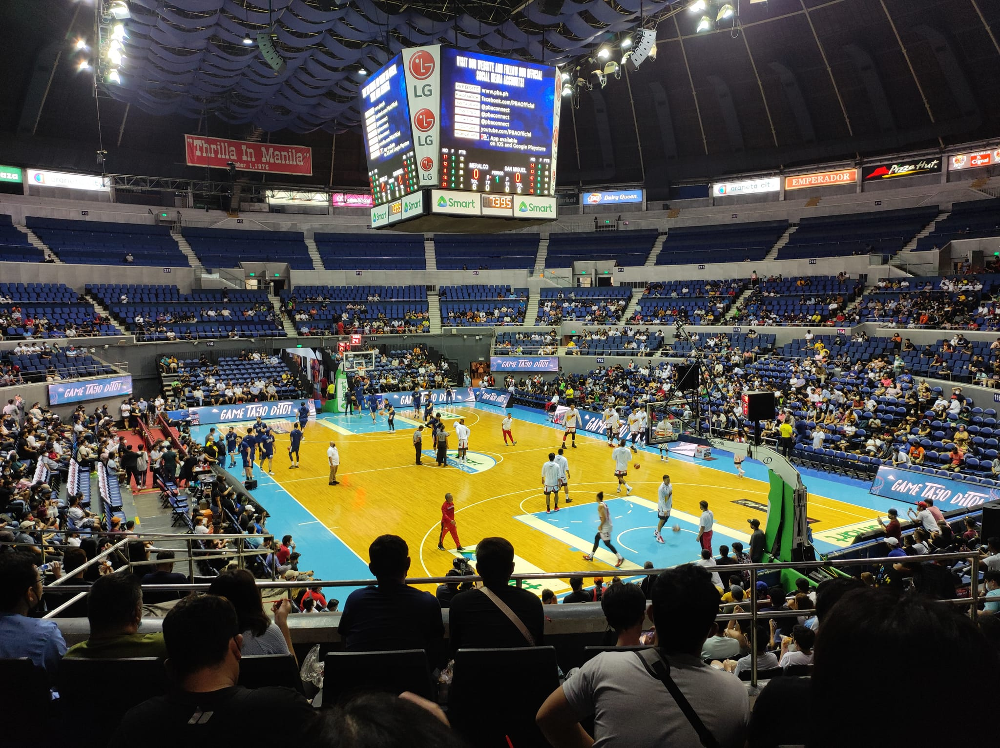
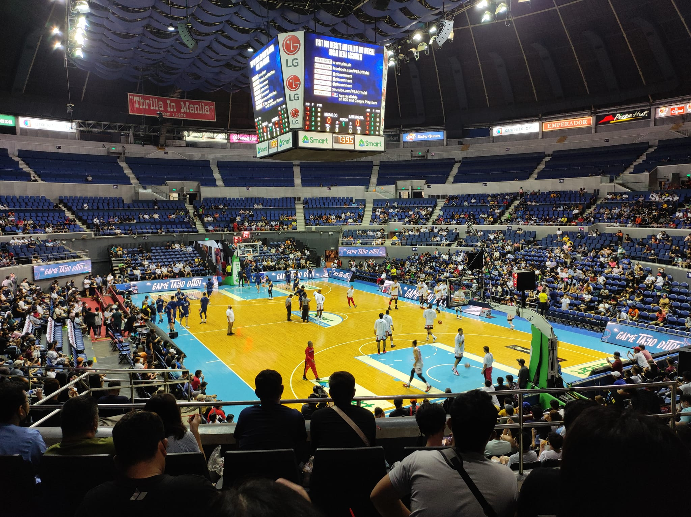
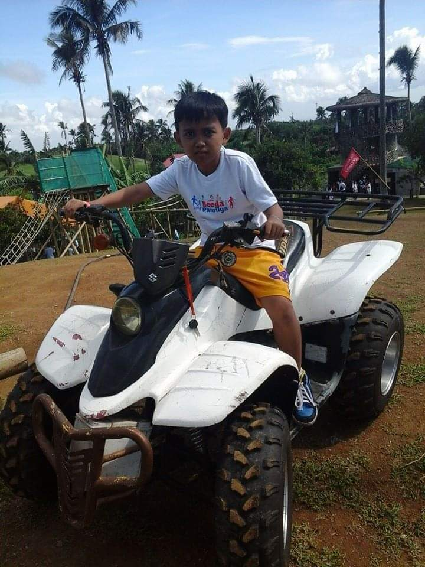
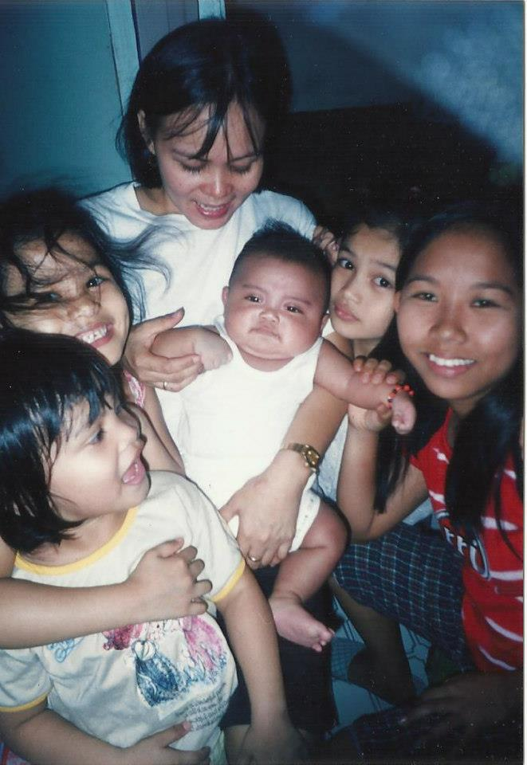
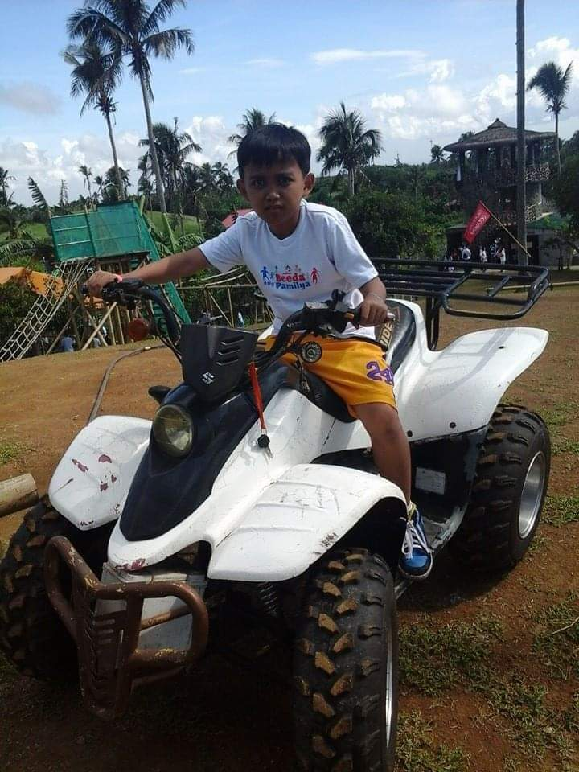
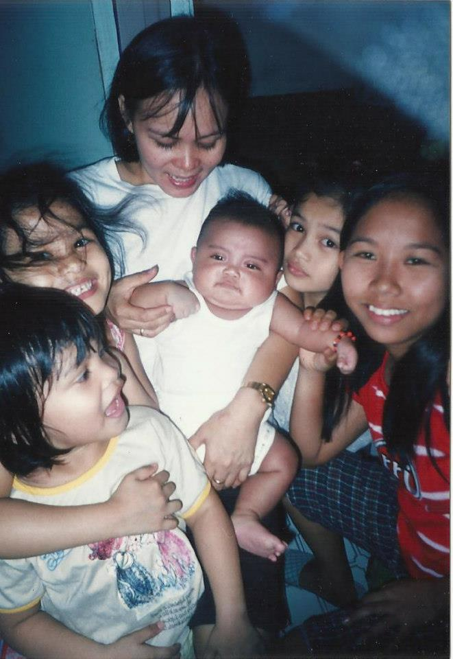

Hello! My Name is Vincent Lawrence F. Enriquez. I lived in San Miguel, Pasig City. I turned 19 years old last December 14, 2022. I graduated High School at Rizal High School taken the ICT strand. I'm an achiever students when I left at Rizal High School, I was a honor student. I'm currently first year college student at Pamantasan ng Lungsod ng Pasig, taking up Bachelor of Science in Information Technology. I'm a sports enthusiast who has honed my abilities in various areas of life. I'm a handsome man. My favorite dishes are sinigang na baboy and adobong manok. As a student I have dreams and passions, I like to be a Professional Basketball Player or to be a Technician, have a great family and be a successful person in the future. My motto in life is "Winners never quit and quitters never win" ,this saying encourages me not to quit on what I want after failing. Winners aren’t perfect people who did good on their first try. Like everybody else, I experienced failure too but instead of quitting after a mistake, I strive again. I try best and I use the failures in order to be stronger and wiser. After learning from my mistakes, I become winners of life because I did not quit when things get tough. On the other hand, it says that quitters never win. It is as simple as it was said. Life is like a race and if you quit along the way, you will never reach the finish line that will make you a winner.
Through life everyone has found something of interest or something they enjoy doing while passing the time. It's an escape from work and more. That is what a hobby is. Hobbies gives us time to unwind and just enjoy ourselves. For me, my hobby is basketball. Basketball is mine because, I've been doing it ever since I was a kid and it's the one activity I can do and lose myself in. I have grown to love it and it has taught me a lot in the process. My father inspired me to play basketball. He explains what basketball is and how to play it. I'm grateful to him because he always taught and advised me on how to become a better basketball player. My others hobbies are watching PBA and NBA games. If there's a opportunity to watch PBA games in live, I will. I also play mobile legends, which I consider one of my hobbies because I do it when I have free time.
We know our strengths and weaknesses because of our hobbies. Everyone of us has strength and weakness. I believe that life is a learning experience and being able to recognize our own strengths and weaknesses can help us become better individuals in anything we choose to do, whether it is positive abilities and skills that can help achieve our goals or negative personal areas that need improvement. Knowing yourself and what you can do, can help you recognize and overcome your weaknesses. When I analyze myself as a student, I find that I have more strengths than weaknesses. However I know that letting my weaknesses take control make me a bad student. As a student I have many good qualities. I am a good student when I am focused and make good use of my time. Overcoming my weaknesses make me a better student. In IT field, my strength are problem solver, creative and hardworking because everytime has a problem when I coding, I never give up to solve it and testing my creativity. It has helped me to come up with new ideas and ways of doing things when I solving a problem in coding. One of my greatest strength is always willing to learn. While my weaknesses are public speaking and lack of confidence because of shyness. When it comes to programming, my weaknesses is I can't create a beautiful and awesome website. One of my greatest weaknesses is being lazy sometimes.
 



 

Back To Top


Back To Top